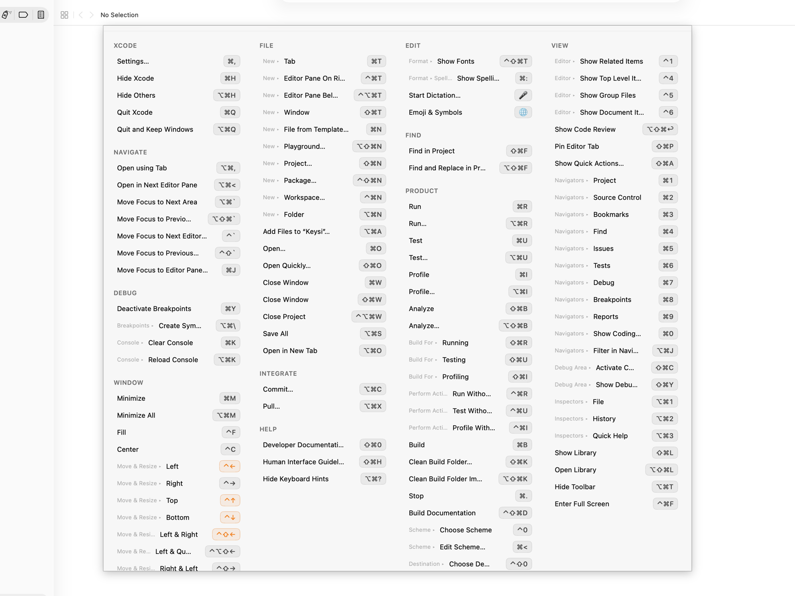

macOS already gives you three ways to do this, and two are a click away in the app you're in. Each one stops somewhere. This page covers where, and then Keysi, the app this site sells, which shows the frontmost app's whole shortcut list at once. That part is free, with no time limit.
None of them shows all of one app's shortcuts at once, while you're using it.
Hold ⌘ for a moment and Keysi shows every shortcut of the frontmost app, grouped by menu, with a breadcrumb for submenu items, each drawn as a keycap (⌘⇧S) instead of "Cmd+Shift+S". Let go and it's gone. The hold key can be ⌘, ⌥, ⌃ or ⇧.
There's no stored list per app. Keysi reads the app's live menus through the macOS Accessibility API when you ask, so it works in apps nobody wrote a cheat sheet for, and a command the app has disabled shows up dimmed.
The same reading produced the shortcut lists for Xcode, Keynote, Finder, Mail and other Mac apps on this site, if you want to read one first.

Because it's the live menu, clicking a row runs that command. You looked the shortcut up because you wanted the thing done, so click it now, read the keycaps on the way, and you'll know it by the third or fourth time.
The list itself is free, with no time limit. Hold your modifier, see every shortcut, click one to run it.
macOS claims some key combinations for itself, and a system shortcut wins before the keystroke reaches the app. The app's menu prints its shortcut anyway, so all you see is nothing happening. Keysi reads macOS's own shortcut assignments and marks the rows the system will intercept, so you find out while reading the list.
Figma and Slack keep most of their shortcuts outside the menu bar, and terminal programs like Vim or tmux have no Mac menu bar at all. For those, Keysi uses custom cheat sheets: hand-written lists tied to an app. Ten ship built in, including Figma, Slack, Vim and tmux, and there's an editor for writing your own for any app, no hand-written JSON needed.
The Vim and tmux sheets work because Keysi looks inside your terminal. In a known terminal (Terminal, iTerm2, Ghostty, Warp, Alacritty, WezTerm, kitty, Hyper, Tabby) it detects the program running in the foreground and matches sheets to it. With several tabs or splits open it uses the window title to tell which one you're looking at, and if that's unclear it shows sheets for everything running. Right most of the time, not always.
You can look a shortcut up a hundred times and still use the menu on the hundred-and-first. A reference waits to be asked.
Keysi Pro ($14.99, one payment, three Macs) adds Shortcut Coach, which shows one quiet reminder when you use the mouse for a menu command that has a shortcut; Practice Mode, which drills the ones you keep missing; and progress figures built from your own timed menu trips, not an industry average. Pro also lets other tools drive Keysi: run commands, Practice and exports from Raycast, Shortcuts, Spotlight, Siri and the Services menu. Just opening an app's shortcuts from Raycast or Shortcuts stays free.
Everything above that section is free, with no time limit, account or card: the overlay, the searchable panel, click-to-run, custom sheets and their editor, and the interception warnings. Every install starts with 14 days of Pro, then drops to the free tier and keeps working.
You can't type to search while holding the modifier. Keysi can see keystrokes but not swallow them, so typing would land in the app underneath, and I won't install an input tap to change that. Press the global hotkey (⇧⌘K by default) instead and the same content opens in a panel you can search.
macOS 14 or later, and Accessibility permission, the API that reads another app's menus. There's no way to do this without it. The Mac App Store's sandbox blocks that API, so Keysi is distributed directly, signed with a Developer ID and notarized by Apple. The FAQ covers what the permission does and doesn't allow, and the privacy page lists every network call the app makes.
macOS shows an app's shortcuts next to the items in its own menu bar, one menu at a time, and most apps let you search their menus from the Help menu. Neither shows you the whole list at once, and submenu items stay hidden until you open the submenu. Keysi is a menu-bar utility that reads the frontmost app's live menu structure and shows every shortcut at once, grouped by menu, when you hold a modifier key.
There is a built-in list of the system's own shortcuts, in System Settings under Keyboard, Keyboard Shortcuts. It does not cover the app you are currently using — each app's shortcuts live in that app's menus, and macOS has no single screen that collects them.
macOS claims some key combinations for itself, and a system shortcut is handled before the keystroke reaches the app. The app's menu still prints the shortcut, so there is no way to tell from the menu alone. Keysi reads the system's own shortcut assignments and flags any app shortcut macOS will intercept first.
Some apps keep their real keyboard shortcuts out of the menu bar entirely. Figma, Slack and terminal programs like Vim and tmux are common examples. Keysi covers these with custom cheat sheets: ten ship built in, including Figma, Slack, Vim and tmux, and you can write your own for any app in Keysi's editor.